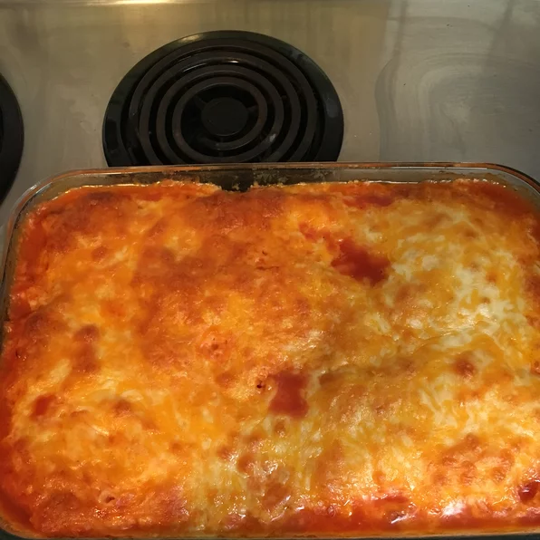

Easy Tamale Casserole

You love to see the cheese pull
My mom liked to make the Hamburger Helper® version of this recipe. When I moved to another state, I could not find it, so I came up with this. Memories of home. My hubby likes for me to spice this up sometimes, so I will use a 14-ounce can of tomatoes and green chiles in it or just use a Mexican-style cornbread mix sometimes.
Ingredients
- 1 pound ground beef
- 1/2 teespoon salt
- 1/2 teaspoon ground black pepper
- 1 small onion
- 2 (15 ounce) cans pinto beans rinsed and drained
- 2 (15 ounce) cans crushed tomatoes
- 1 (15 ounce) can cream-style corn
- 1 (6 ounce) box cornbread mix
- 1 egg, lightly beaten
- 1 cup shredded Cheddar cheese
Steps
- Step 1: Preheat oven to 400 degrees F (200 degrees C).
- Step 2: Heat a cast-iron skillet over medium-high heat. Cook and stir beef in the hot skillet until browned and crumbly, 5 to 7 minutes; drain and discard grease. Season beef with salt and pepper.
- Step 3: Stir onion into the ground beef; cook and stir for 1 minute and immediately remove skillet from heat.
- Step 4: Stir pinto beans and crushed tomatoes into the beef mixture.
- Step: 5Beat cream-style corn, cornbread mix, and egg together in a bowl until smooth; spread over the top of the ground beef mixture in the skillet. Sprinkle Cheddar cheese over the corn mixture.
- Step 6: Bake in preheated oven until the cheese is melted and the cornbread is set in the middle, about 25 minutes.